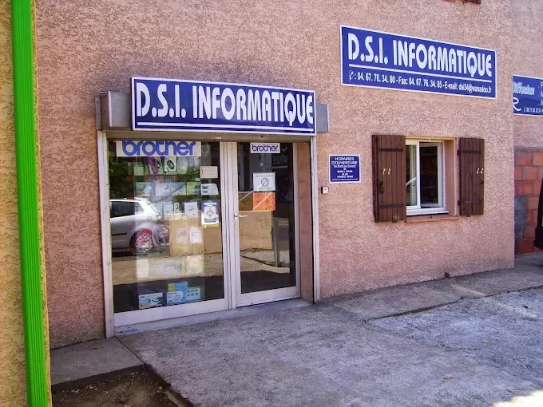

PC sur-mesure
Bureautique, gamer ou polyvalent. On part de ce que vous faites avec votre ordinateur et de votre budget, puis on le monte et on le teste à l'atelier.
Voir les configurationsBoutique & atelier · Béziers
Vente, assemblage sur-mesure et dépannage de votre matériel informatique par des professionnels.

On fait les trois au même endroit. Vous avez donc un seul interlocuteur, du choix de la machine jusqu'au jour où elle a besoin d'un coup de main.
Bureautique, gamer ou polyvalent. On part de ce que vous faites avec votre ordinateur et de votre budget, puis on le monte et on le teste à l'atelier.
Voir les configurationsPC lent, virus, panne, écran cassé, données à récupérer. Diagnostic et réparation à l'atelier.
Comment ça se passeImprimantes et cartouches, écrans, claviers, SSD, mémoire, câbles. Beaucoup de choses sont en rayon.
Demander une disponibilitéTrois points de départ. Ensuite, on ajuste chaque pièce à votre usage et à votre budget, et on vous fait un devis.
Internet, mails, traitement de texte, visio, comptabilité. Silencieux et fiable.
Jeux récents, streaming, écran haute fréquence. La carte graphique est choisie selon vos jeux, et le refroidissement suit.
Photo, montage vidéo, télétravail, un peu de jeu. Un bon équilibre entre puissance et prix.
Sur demande : installation chez vous, transfert des données de l'ancien PC et mise en route.
Fixe ou portable, acheté chez nous ou ailleurs : apportez-le en boutique. On regarde, on vous dit ce qu'il a et combien ça coûte, et on ne touche à rien sans votre accord.
Décrire ma panneEt vous nous expliquez ce qui se passe.
À l'atelier, par nos techniciens.
Avec le prix et le délai. Vous décidez.
Et on vous prévient dès que c'est prêt.
Parce qu'on est là depuis 1995, et que la plupart de nos clients sont venus parce qu'un voisin, un collègue ou quelqu'un de la famille leur a donné notre adresse.
Lire les avis sur GoogleExpérience locale depuis 1995. On a vu passer toutes les générations de matériel, du Pentium aux cartes graphiques d'aujourd'hui. Les pannes, on les connaît.
Conseil personnalisé. Avant de vous vendre quoi que ce soit, on vous demande ce que vous en ferez. Parfois, la bonne réponse, c'est de garder votre PC et de changer une pièce.
Atelier sur place à Béziers. Votre machine ne part pas dans un centre de réparation à l'autre bout de la France. Elle reste ici, et vous savez qui s'en occupe.
Pas trouvé votre réponse ? Le plus simple, c'est de nous appeler au 04 67 76 34 80.
Oui. Fixe ou portable, peu importe la marque ou le magasin d'origine.
Ça dépend de la panne et des pièces à commander. On vous donne un délai précis après le diagnostic, en même temps que le prix.
Oui, sur disque dur ou SSD, même quand l'ordinateur ne démarre plus. Si le disque fait un bruit inhabituel, ne le rallumez plus et apportez-le tel quel.
Oui, on a des imprimantes et des consommables en rayon. Pour un modèle précis, appelez-nous avant de passer pour vérifier qu'on l'a.
Bien sûr. Dites-nous à quoi il va servir et combien vous voulez mettre, on s'occupe du reste.
Oui, pour installer votre nouveau matériel. Appelez-nous pour fixer un créneau.
Du mardi au samedi, de 8h à 12h et de 14h à 18h. Fermé le dimanche et le lundi.
10 rue Olivette, Béziers
Le plan est fourni par Google Maps, qui peut déposer des cookies.